|
|
|
Orange-spotted
gymnodoris nudibranch
Gymnodoris rubropapulosa
Family Gymnodorididae
updated
May 2020
Where
seen? This rather clownish white nudibranch with orange spots is sometimes
seen on our more remote Southern shores. They appear to be seasonally common; at
some times, several can be seen during a visit.
Features: 2.5-4cm long. Body white
with orange bumps. Rhinophores orange, the 'face' with orange bumps
on the edge, gills edged in orange. According to Bill Rudman,
compared to Gymnodoris ceylonica, it has much larger orange
spots which are more densely arranged, the body is longer and gills
relatively small. There are also major anatomical differences. It
has a wide Indo-West Pacific distribution and is known from Indonesia
and Singapore and recently reported from Hong Kong and Tanzania. Its
comical patterns may warn other animals not to mess with it. Some
Gymnodoris nudibranchs secrete nasty acids and chemicals.
What does it eat? Gymnodoris species are said to be 'voracious
predators' of other sea slugs like nudibranchs, sacoglossans and sea
hares. Among its prey is Ceratosoma sp. |
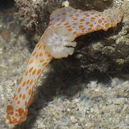
Pulau
Ular, Apr 06 |
|
|
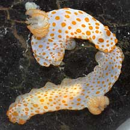
Pulau Semakau,
Sep 05 |
|
|
| Orange-spotted
gymnodoris nudibranchs on Singapore shores |
| Other sightings on Singapore shores |
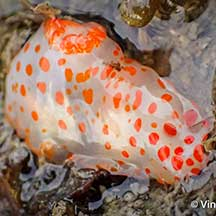
Sentosa Tg Rimau, Apr 21
Photo shared by Vincent Choo on facebook. |
|
|
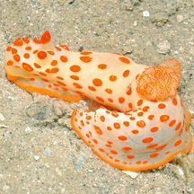
St. John's
Island , Apr 12
Photo shared by Loh Kok Sheng on his
blog. |
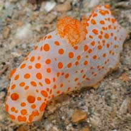
Pulau Jong, Aug 21
Photo shared by Vincent Choo on facebook. |
|
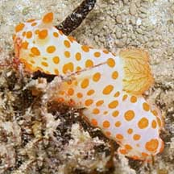
Terumbu Raya, Jul 09
Photo shared by James Koh on his
blog. |
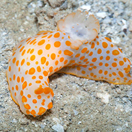
Terumbu Semakau, Dec 15
Photo shared by Marcus Ng on facebook. |
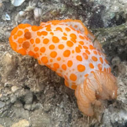
Terumbu Pempang Tengah, May 25
Photo shared by Tammy Lim on facebook. |
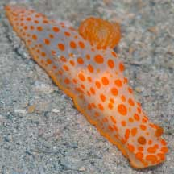
Terumbu Bemban, Apr 22
Photo shared by Marcus Ng on facebook |
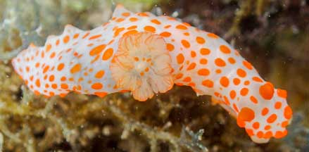
Terumbu Bemban, May 21
Photo shared by Vincent Choo on facebook. |
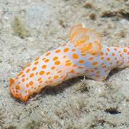
Beting Bemban Besar, Nov 14
Photo shared by Marcus Ng on facebook. |
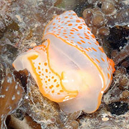
Beting Bemban Besar, Aug 12
Photo shared by Loh Kok Sheng on flickr.
|
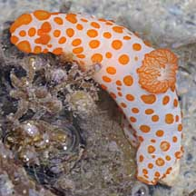
Terumbu Berkas, Jan 10 |
Links
References
- Tan Yee Keat. 26 June 2015. Apparent mimicry of marine flatworm and nudibranch: Marine flatworm, Pseudoceros sp.; Nudibranch, Gymnodoris impudica. Singapore Biodiversity Records 2015: 85-86.
- Tan Siong
Kiat and Henrietta P. M. Woo, 2010 Preliminary
Checklist of The Molluscs of Singapore (pdf), Raffles
Museum of Biodiversity Research, National University of Singapore.
- Chou, L.
M., 1998. A
Guide to the Coral Reef Life of Singapore. Singapore Science
Centre. 128 pages.
- Debelius,
Helmut, 2001. Nudibranchs
and Sea Snails: Indo-Pacific Field Guide IKAN-Unterwasserachiv, Frankfurt. 321 pp.
- Wells, Fred
E. and Clayton W. Bryce. 2000. Slugs
of Western Australia: A guide to the species from the Indian to
West Pacific Oceans.
Western Australian Museum. 184 pp.
- Coleman,
Neville. 2001. 1001
Nudibranchs: Catalogue of Indo-Pacific Sea Slugs. Neville
Coleman's Underwater Geographic Pty Ltd, Australia.144pp.
- Coleman,
Neville, 1989. Nudibranchs
of the South Pacific Vol 1. 64 pp.
- Humann, Paul
and Ned Deloach. 2010. Reef
Creature Identification: Tropical Pacific New World Publications.
497pp.
- Gosliner,
Terrence M., David W. Behrens and Gary C. Williams. 1996. Coral
Reef Animals of the Indo-Pacific: Animal life from Africa to Hawaii
exclusive of the vertebrates Sea Challengers. 314pp.
|
|
|